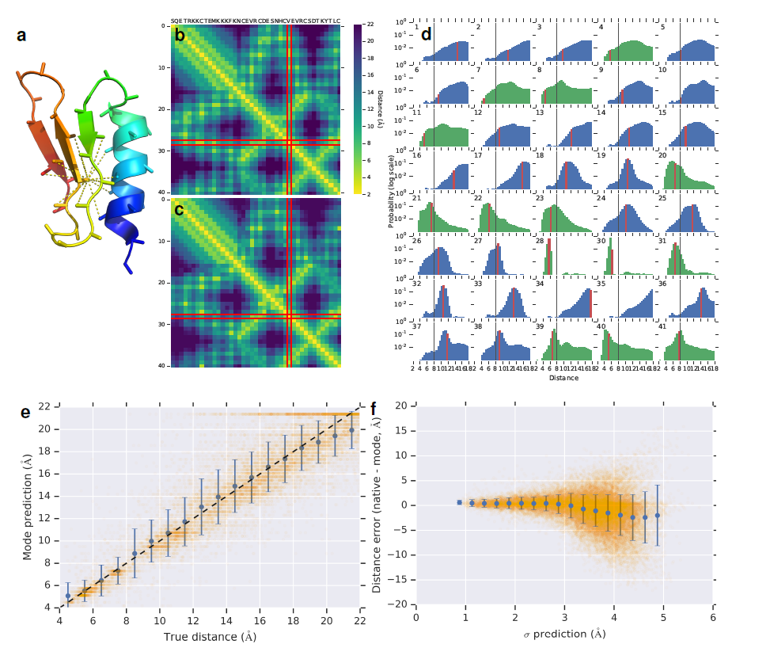
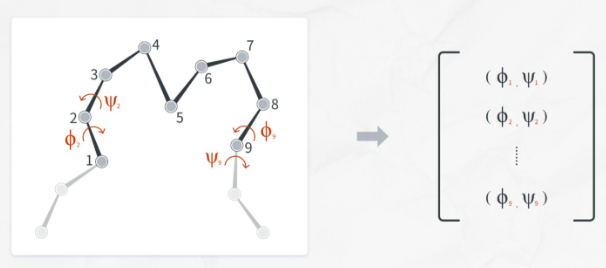
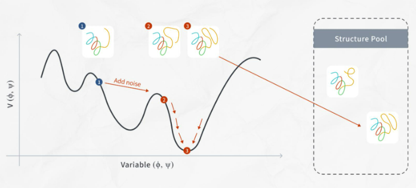
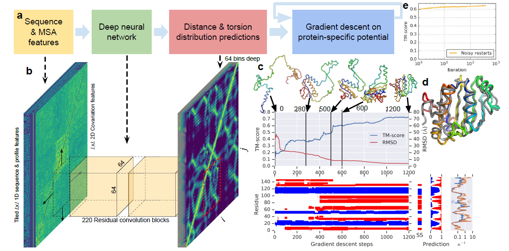

AlphaFold. Geometria de las Proteinas#
Introducción#
El problema del plegamiento de proteínas se refiere a cómo las proteínas se presentan en sus formas finales y dicta su estructura tridimensional a partir de la secuencia de aminoácidos.
La secuencia de proteínas, el orden de los aminoácidos y las propiedades electromagnéticas de cada aminoácido determinan la forma final de las proteínas. Además, dado que hay 20 tipos diferentes de aminoácidos, la secuencia de proteínas se puede expresar simplemente como una combinación de 20 símbolos únicos.
El problema del plegamiento de proteínas se ha tratado con varios métodos computacionales utilizando modelos basados en plantillas (basados en la idea de que secuencias similares conducen a estructuras similares), enfoques de ensamblaje de fragmentos, etc. En el último enfoque, una secuencia de proteínas objetivo se deconstruyó en pequeños fragmentos superpuestos, y la base de datos se examinó para identificar estructuras conocidas de secuencias de fragmentos similares que luego se ensamblan en una predicción de longitud completa. Aunque el último método demostró ser exitoso, se considera ineficiente ya que lleva demasiado tiempo de computación.
Aquí es donde aparecen los “datos de covariación evolutiva” y mejoran la precisión de las predicciones de estructura. AlphaFold 1 se define como un “método dependiente de la coevolución”.
Coevolución de proteínas
Los puntos de contacto juegan un papel crucial en el mantenimiento de la estructura 3D general de las proteínas. Las interacciones electroquímicas de un par de aminoácidos forman estos puntos de contacto. Sin embargo, la mutación puede ocurrir y cambiar uno de estos aminoácidos durante la evolución, y en consecuencia cambiar la estructura y función de la proteína. Es por eso que, en general, cuando uno de estos aminoácidos se modifica, el otro par también se ajusta para mantener propiedades electromagnéticas similares que mantendrán la forma de la proteína sin cambios. En esta situación, decimos que un par de aminoácidos coevolucionaron. Después de un reemplazo, la coevolución tiende a equilibrar la proteína al cambio.
si desea buscar interacciones de aminoácidos relevantes que contribuyan a la estructura (y función) de las proteínas, debe buscar pares de aminoácidos que hayan coevolucionado.
La covariación de aminoácidos se puede encontrar analizando un gran número de bases de datos de secuencias. La alineación de secuencias múltiples o programas MSA se utilizan para alinear varias secuencias de aminoácidos de familias de proteínas de diferentes especies y examinar la correlación entre los aminoácidos. Este análisis informa la correlación en pares de posiciones que pueden contribuir a la forma de la proteína.
AlphaFold no solo busca el punto de contacto, sino que predice la distancia entre los aminoácidos en una proteína y la distribución de probabilidad de la distancia predicha.
En la siguiente imagen del artículo AlphaFold 1 ([Senior et al., 2020]) se puede ver que cada píxel en el mapa de distancia representa una distribución de probabilidad. DeepMind, la empresa desarrolladora de AlphaFold, llama a esto un distograma. En concreto es el distograma de la proteina CASP T0955 (longitud = 41):
{kind=link}
(a) Estructura nativa que muestra distancias inferiores a 8 \(\mathring{A}\) desde \(C_{\beta}\) del residuo 29.
(b) Distancia de inter-residuos nativos.
(c) La moda de las predicciones de distancia, resaltando el residuo 29.
(d) Las distribuciones de probabilidad previstas para las distancias del residuo 29 a todos los demás residuos.
Puede verse que las modas de la distribución (c) coinciden estrechamente con las distancias reales (b).
AlphaFold 1 representa estructuras 3D como un par de ángulos de torsión entre aminoácidos. Incluso cuando una proteína está en un estado plegado, los bloques básicos, la estructura del aminoácido permanece sin cambios. Sin embargo, el ángulo de torsión entre un aminoácido y el otro cambia. AlphaFold calcula la distribución de probabilidad de los ángulos de torsión de los aminoácidos.
{kind=link}
En el primer paso, AlphaFold 1 recibe datos y secuencia de aminoácidos de una proteína objetivo y entrena una red convolucional (con conjunto de datos PDB) para encontrar:
El distograma de la proteína
La distribución de probabilidad del ángulo de torsión.
{kind=link}
En el segundo paso, AlphaFold 1 ejecuta una iteración de gradiente descenso de la función potencial de la proteina.
Construye una función potencial específicia
A partir de:
Potencial de distancia(\(V_{distance}(\phi,\psi)\)): cruzando los angulos de torsión y el distograma predicho por la red convolucional.
Potencial geométrico(\(V_{torsion}(\phi,\psi)\)): cruzando la estructura predicha inicialmente y distribución de torsión.
Potencial suave(\(V_{score2-smooth}(\phi,\psi)\)): La estructura de aminoácidos tiene una estructura de columna vertebral y cadenas laterales. Sin embargo, cuando AlphaFold 1 predice la estructura inicial, se hace utilizando solo la estructura de la columna vertebral, y no se considera si existe o no una cadena lateral. Por lo tanto, AlphaFold incorpora el término Van der Waals para evitar choques estéricos, porque los residuos no chocan entre sí. Esto se conoce como el potencial suave.
{kind=link}
El último paso es encontrar por iteración una solución óptima que minimice la función potencial correspondiente. AlphaFold 1 utiliza la minimización del descenso de gradiente para obtener estructuras de proteínas bien empaquetadas. La estructura de menor potencial se almacena como la mejor solución de la iteración como una de las respuestas esperadas.
Si solo confía en la estructura inicial, puede caer en mínimos locales, por lo que también se agregará ruido. El valor óptimo de esa iteración también se almacena como una respuesta esperada.
{kind=link}
La predicción de la estructura de proteínas tiene como objetivo determinar la forma tridimensional de una proteína a partir de su secuencia de aminoácidos. En 2018 AlphaFold 1 ([Senior et al., 2020]) participó junto a 97 grupos en una competición bienal para predecir la estructura de 84 secuencias de proteinas cuya estructura se determinó experimentalmente.
Dividieron las proteinas en 104 dominios y clasificaron cada uno como supceptible al modelado basado en plantillas (TBM), modelado libre (FM) o intermedio (TBM/FM). AlphaFold predijo más dominios FM con alta precisión que cualquier otro sistema.
{kind=link}
El proceso de plegado para el objetivo de CASP13 identificado como T0986s2 (cuya longitud es L=155) es:
(a) Pasos de la predicción de estructuras.
(b) La red neuronal predice todo el distograma LxL en función de las características de MSA, acumulando predicciones separadas para residuos 64x64
(c) Iteración de gradiente descenso (1200 pasos) con la puntuación TM y RMSD graficadas contra el número de pasos. También se muestra la estructura secundaria (de SST30) (hélice en azul, hebra en rojo) junto con la estructura secundaria nativa (SS), las probabilidades de predicción de la estructura secundaria de la red y la incertidumbre en las predicciones del ángulo de torsión (\(K^{-1}\) de la distribución de von Mises).
(d) muestra la primera presentación final superpuesta a la estructura nativa (en gris).
(e) muestra el puntaje TM promedio (a través del conjunto de prueba, n = 377) de la estructura de potencial más bajo contra el número de repeticiones de descenso de gradiente (escala logarítmica).
El componente central de AlphaFold es una red neuronal convolucional que se entrena en estructuras PDB para predecir las distancias \(d_{ij}\) entre los átomos de \(C_{\beta}\) de los pares, \(ij\), de los 96 residuos de una proteína. Basado en una representación de la secuencia de aminoácidos de la proteína, \(\mathcal{S}\), y características derivadas de la secuencia MSA, la red, de estructura similar a las utilizadas para el reconocimiento de imágenes, predice una distribución de probabilidad discreta \(P(d_{ij} | \mathcal{S}, MSA(\mathcal{S}))\) para cada par \(ij\) en una región de residuos de 64x64.
El conjunto completo de predicciones de distribución de distancia se construye promediando predicciones para regiones superpuestas y se denomina distograma (”histograma de distancias”).
Para realizar estructuras que se ajusten a las predicciones de distancia, se contruye una \(V_{distancia}\) de potencial suave, ajustando un sp-line a las probabilidades logarítmicas negativas y sumando todos los pares de residuos. Se parametrizan las estructuras proteicas por los ángulos de torsión del esqueleto \((\phi, \psi)\) de todos los residuos y se construye una función diferenciable de la geometría de la proteina \(x=G(\phi, \psi)\) para calcular las coordenadas de \(C_{\beta}\), \(x\), y sus distancias inter-residuo, \(d_{ij}=|x_i-x_j|\), para cada estructura, y expresar \(V_{distancia}\) como una función de \(\phi\) y \(\psi\).
Para una proteína con \(L\) residuos, este potencial acumula \(L^2\) términos de predicciones de distribución marginal, donde \(L\) es la longitud de la proteina.
La distribución de referencia modela las distribuciones de distancia \(P(d_{ij} | L)\) independientemente de la secuencia de la proteína y se calcula entrenando una versión pequeña de la red neuronal con las predicciones de la distancia en las mismas estructuras, sin características de entrada de secuencia o MSA.
Se entrena una cabecera de salida separada de la red de predicción de contacto para predecir distribuciones de probabilidad discretas de los ángulos de torsión de la columna vertebral \(P(\phi_i, \psi_j | S, MSA(S))\). Después de ajustar una distribución de von Mises, esto se usa para agregar un término de modelado de torsión suave \(V_{torsion}\) al potencial:
Finalmente, para evitar choques estéricos, se agrega el \(V_{score2-suave}\) de Rosetta al potencial, ya que incorpora un término de van der Waals.
[Senior et al., 2020] proporcionan un código ejecutado con la arquitectura Tensorflow que permite predecir proteinas estructuradas en CASP13. Es la versión oficial inicial o AlphaFold 1, el enlace es:
https://github.com/deepmind/deepmind-research/tree/master/alphafold_casp13
Una versión 2 se encuentra en:
https://github.com/deepmind/alphafold
Hemos utilizado una versión de AlphaFold 1 en PyTorch, con las adaptaciones necesarias a Jupyter. Que puede ejecutarse tanto en CPU, como GPU:
https://github.com/Urinx/alphafold_pytorch
Únicamente la función de lectura de ficheros TFREC (tfrec_read) está sin migrar a PyTorch y requiere de la instalación de TensorFlow.
No aparece publicada la función de pérdida, por lo que no es posible construir el modelo de entrenamiento. Por contra [Senior et al., 2020] proporcionan los modelos entrenados en:
http://bit.ly/alphafold-casp13-weights
Alcance del cuaderno#
El alcance del cuaderno es una versión abreviada del código abierto que muestran los autores de AlphaFold 1, donde únicamente se modela el primer paso del algoritmo hasta obtener los distogramas.
Esta versión abreviada se ciñe a la rutina run_eval de https://github.com/deepmind/deepmind-research/tree/master/alphafold_casp13, no implementado la ejecución ensamblada contra varias que aparece en run_ensamble
import os
import numpy as np
import itertools
import math, random
import torch
from torch.utils.data import Dataset, DataLoader
from torchvision import transforms, utils
from pathlib import Path
googleColaboratory=False
modoEvaluacion=False
if googleColaboratory:
from google.colab import drive
drive.mount('/content/drive/')
path = Path("/content/drive/MyDrive/Colab Notebooks/data/alphafold") if googleColaboratory else Path("./data/alphafold")
print(path.absolute())
C:\Users\valer_z\ownCloud - VALERIANO MENDEZ FUENTES@drive.upm.es\AA\jupyterbook\bookIAA\data\alphafold
Creación de Datasets y Dataloaders#
Definición de las características del modelo#
El modelo incorpora las siguientes características:
aatype : Una codificación activa de tipos de aminoácidos. La asignación es ARNDCQEGHILKMFPSTWYVX -> rango (21).
alpha_mask : Máscara para alpha_positions.
alpha_positions : (x, y, z) Coordenadas alfa de carbono.
beta_mask : Máscara para beta_positions.
beta_positions : (x, y, z) Coordenadas beta de carbono.
between_segment_residues : El número de residuos entre segmentos (BSR) en la siguiente posición. P.ej. ABCXXD (XX es BSR) sería [0,0,2,0].
chain_name : El nombre de la cadena. P.ej. ‘A’, ‘B’, …
deletion_probability : La fracción de secuencias que tuvieron una eliminación en esta posición.
domain_name : El nombre de dominio.
gap_matrix : (NR, NR, 1) Señal de covariación de los estados separados, esto da una indicación de la varianza inducida debido a los estados separados.
hhblits_profile : float32 (NR, 22) Un perfil (distribución de probabilidad sobre tipos de aminoácidos) calculado usando HHBlits MSA. Codificación: 20 aminoácidos + ‘X’ + ‘-‘.
hmm_profile : (NR, 30) El perfil HHBlits HHM (del archivo de salida -ohhm HHBlits). Los asteriscos en la salida se reemplazan por 0.0.
key : La identificación única de la proteína.
mutual_information : (NR, NR, 1) La información mutua corregida del producto promedio. Ver https://doi.org/10.1093/bioinformatics/btm604.
non_gapped_profile : (NR, 21) Un perfil solo de aminoácidos (descontando espacios).
num_alignments : (NR, 1) El número de alineaciones de secuencias múltiples de HHBlits. Tiene que ser repetido NR veces.
num_efective_alignments : El número de alineaciones efectivas (neff al 62 % de similitud de secuencia).
phi_angles : (NR, 1) Los ángulos phi.
phi_mask : (NR, 1) Máscara para phi_angles.
perfil : (NR, 21) Un perfil (distribución de probabilidad sobre tipos de aminoácidos) calculado usando PSI-BLAST. Equivalente a la salida de ChkParse.
profile_with_prior : (NR, 22) Un perfil calculado usando HHBlits que tiene en cuenta las previas y la matriz Blosum. Ver ecuación 5 en https://doi.org/10.1093/nar/25.17.3389.
profile_with_prior_without_gaps : (NR, 21) Igual que profile_with_prior pero sin espacios incluidos.
pseudo_bias : (NR, 22) El sesgo calculado en el cálculo de pseudoverosimilitud de MSA.
pseudo_frob : (NR, NR, 1) Norma de pseudoverosimilitud de Frobenius (brechas no incluidas). Similar a la salida de CCMPred.
pseudolikelihood : (NR, NR, 484) Los pesos calculados en el cálculo de pseudoverosimilitud de MSA.
psi_angles : (NR, 1) Los ángulos psi.
psi_mask : (NR, 1) Máscara para psi_angles.
residuo_index : (NR, 1) Índice de cada residuo de 0 a NR - 1. Ver más abajo.
resolution : La resolución de la estructura de la proteína.
reweighted_profile : (NR, 22) Perfil donde las secuencias se vuelven a ponderar para ponderar más las secuencias más raras. Vea abajo.
sec_structure : (NR, 8) Estructura secundaria generada por DSSP y codificada one-hot por el mapeo -HETSGBI -> range(8).
sec_structure_mask : (NR, 1) Máscara para sec_structure_mask.
seq_length : (NR, 1) La longitud de la secuencia de aminoácidos. Tiene que ser repetido NR veces. Vea abajo.
sequence : La secuencia de aminoácidos (codificación de aminoácidos de 1 letra). Vea abajo.
solv_surf : (NR, 1) Área relativa accesible al solvente calculada usando DSSP y luego normalizada por la accesibilidad máxima de aminoácidos.
solv_surf_mask : (NR, 1) Máscara para solv_surf.
superfamily : El código CATH de la superfamilia.
Para más detalle:
https://github.com/deepmind/deepmind-research/blob/master/alphafold_casp13/README.md
Show code cell content
import json
import pickle
import collections
import numpy as np
import torch
from torch.utils.data import DataLoader, Dataset
NUM_RES = None
FEATURES = {
'aatype': ('float32', [NUM_RES, 21]),
'alpha_mask': ('int64', [NUM_RES, 1]),
'alpha_positions': ('float32', [NUM_RES, 3]),
'beta_mask': ('int64', [NUM_RES, 1]),
'beta_positions': ('float32', [NUM_RES, 3]),
'between_segment_residues': ('int64', [NUM_RES, 1]),
'chain_name': ('string', [1]),
'deletion_probability': ('float32', [NUM_RES, 1]),
'domain_name': ('string', [1]),
'gap_matrix': ('float32', [NUM_RES, NUM_RES, 1]),
'hhblits_profile': ('float32', [NUM_RES, 22]),
'hmm_profile': ('float32', [NUM_RES, 30]),
'key': ('string', [1]),
'mutual_information': ('float32', [NUM_RES, NUM_RES, 1]),
'non_gapped_profile': ('float32', [NUM_RES, 21]),
'num_alignments': ('int64', [NUM_RES, 1]),
'num_effective_alignments': ('float32', [1]),
'phi_angles': ('float32', [NUM_RES, 1]),
'phi_mask': ('int64', [NUM_RES, 1]),
'profile': ('float32', [NUM_RES, 21]),
'profile_with_prior': ('float32', [NUM_RES, 22]),
'profile_with_prior_without_gaps': ('float32', [NUM_RES, 21]),
'pseudo_bias': ('float32', [NUM_RES, 22]),
'pseudo_frob': ('float32', [NUM_RES, NUM_RES, 1]),
'pseudolikelihood': ('float32', [NUM_RES, NUM_RES, 484]),
'psi_angles': ('float32', [NUM_RES, 1]),
'psi_mask': ('int64', [NUM_RES, 1]),
'residue_index': ('int64', [NUM_RES, 1]),
'resolution': ('float32', [1]),
'reweighted_profile': ('float32', [NUM_RES, 22]),
'sec_structure': ('int64', [NUM_RES, 8]),
'sec_structure_mask': ('int64', [NUM_RES, 1]),
'seq_length': ('int64', [NUM_RES, 1]),
'sequence': ('string', [1]),
'solv_surf': ('float32', [NUM_RES, 1]),
'solv_surf_mask': ('int64', [NUM_RES, 1]),
'superfamily': ('string', [1]),
}
Protein = collections.namedtuple('Protein', ['len', 'seq', 'inputs_1d', 'inputs_2d', 'inputs_2d_diagonal', 'scalars', 'targets'])
Lectura de los ficheros tfrec, pkl y config#
La función tfrec_read necesita la librería TensorFlow.
#!pip install tensorflow
Show code cell content
def tfrec_read(tfrec_file):
import tensorflow as tf
import os
os.environ["TF_CPP_MIN_LOG_LEVEL"] = "2"
features = [
'aatype',
'beta_mask',
'beta_positions',
'between_segment_residues',
'chain_name',
'deletion_probability',
'domain_name',
'gap_matrix',
'hhblits_profile',
'hmm_profile',
'non_gapped_profile',
'num_alignments',
'num_effective_alignments',
'profile',
'profile_with_prior',
'profile_with_prior_without_gaps',
'pseudo_bias',
'pseudo_frob',
'pseudolikelihood',
'residue_index',
'resolution',
'reweighted_profile',
'sec_structure',
'sec_structure_mask',
'seq_length',
'sequence',
'solv_surf',
'solv_surf_mask',
'superfamily'
]
features = {name: FEATURES[name] for name in features}
def parse_tfexample(raw_data, features):
feature_map = {k: tf.io.FixedLenSequenceFeature(shape=(), dtype=eval(f'tf.{v[0]}'), allow_missing=True) for k, v in features.items()}
parsed_features = tf.io.parse_single_example(raw_data, feature_map)
num_residues = tf.cast(parsed_features['seq_length'][0], dtype=tf.int32)
for k, v in parsed_features.items():
new_shape = [num_residues if s is None else s for s in FEATURES[k][1]]
assert_non_empty = tf.assert_greater(tf.size(v), 0, name=f'assert_{k}_non_empty',
message=f'The feature {k} is not set in the tf.Example. Either do not '
'request the feature or use a tf.Example that has the feature set.')
with tf.control_dependencies([assert_non_empty]):
parsed_features[k] = tf.reshape(v, new_shape, name=f'reshape_{k}')
return parsed_features
raw_dataset = tf.data.TFRecordDataset([tfrec_file])
raw_dataset = raw_dataset.map(lambda raw: parse_tfexample(raw, features))
return raw_dataset
Show code cell content
def tfrec2pkl(dataset, pkl_file):
datalist = []
dataset = dataset.batch(1)
for x in dataset:
data = {}
for k, v in x.items():
if k in ['sequence', 'domain_name', 'chain_name', 'resolution', 'superfamily', 'num_effective_alignments']:
# print(f"{k}: {v.numpy()[0,0].decode('utf-8')}")
if v.numpy().dtype == 'O':
data[k] = v.numpy()[0,0].decode('utf-8')
else:
data[k] = v.numpy()[0,0]
else:
# print(k, v.numpy().shape)
data[k] = v.numpy()[0]
datalist.append(data)
with open(pkl_file, 'wb') as f:
pickle.dump(datalist, f)
return datalist
Show code cell content
from collections import namedtuple
def build_config(model_path, replica):
#config_file = model_path / replica / 'config.json'
config_file = os.path.join(model_path, str(replica), 'config.json')
#stats_file = model_path / 'stats_train_s35.json'
stats_file = os.path.join(model_path,'stats_train_s35.json')
with open(config_file, 'r') as f:
config = json.load(f)
with open(stats_file, 'r') as f:
norm_stats = json.load(f)
default = {
'torsion_multiplier': 0, 'collapsed_batch_norm': False,
'filters_1d': [], 'is_ca_feature': False,
}
config['norm_stats'] = norm_stats
config['network_config'] = {**default, **config['network_config']}
exclude = norm_stats.keys()
def make_nt(d, n):
return namedtuple(n, d.keys())(**{k: make_nt(v, k) if isinstance(v, dict) and k not in exclude else v for k,v in d.items()})
return make_nt(config, 'config')
Show code cell content
def save_seq_prob(prob, seq, out_file):
SECONDARY_STRUCTURES = '-HETSGBI'
if len(prob.shape) == 1:
prob = prob.reshape(-1,1)
L, n = prob.shape
label = 'asa' if n == 1 else 'secstruct'
with out_file.open('w') as f:
f.write(f"# LABEL {label} CLASSES [{''.join(SECONDARY_STRUCTURES[:n])}]\n\n")
for i in range(L):
ss = SECONDARY_STRUCTURES[prob[i].argmax()]
f.write(f"{i+1:4d} {seq[i]:1s} {ss:1s} {''.join(['%6.3f'%p for p in prob[i]])}\n")
Dibujo de distogramas#
Se dibujan los distogramas del modelo
Show code cell content
def plot_contact_map(target, mats, out):
import matplotlib.pyplot as plt
if len(mats) == 1:
fig, ax = plt.subplots()
axs = [ax]
else:
fig, axs = plt.subplots(1, len(mats), figsize=(11*len(mats),8))
fig.subplots_adjust(wspace=0)
for i, mat in enumerate(mats):
if len(mat.shape) == 3 and mat.shape[-1] == 64:
vmax = mat.shape[-1] - 1
mat = mat.argmax(-1)
im = axs[i].imshow(mat, cmap=plt.cm.Blues_r, vmin=0, vmax=vmax)
cb = fig.colorbar(im, ax=axs[i])
cb.set_ticks(np.linspace(0, vmax, 11))
cb.set_ticklabels(range(2, 23, 2))
if len(mats) != 1:
axs[i].set_title('distance', fontsize=20)
else:
im = axs[i].imshow(mat, cmap=plt.cm.Blues, vmin=0, vmax=1)
cb = fig.colorbar(im, ax=axs[i])
if len(mats) != 1:
axs[i].set_title('contact', fontsize=20)
if len(mats) == 1:
plt.title(target)
plt.savefig(out, dpi=300)
else:
fig.suptitle(target, fontsize=20)
plt.savefig(out, dpi=300, bbox_inches='tight', pad_inches=0.5)
Función de carga de datos (Dataset)#
Desde los ficheros se obtiene el Dataset, una estructura de tensores con los datos de entrada
El dataset es un objeto (creado con una clase de usuario) de conjunto de datos desde el que cargar datos. PyTorch admite dos tipos diferentes de conjuntos de datos:
map-style datasets,
iterable-style datasets.
El dataset Map-style es un conjunto de datos de estilo mapa, que está implementado con los protocolos getitem() y len() , y representa un mapa de índices / claves (posiblemente no integrales) a muestras de datos.
Por ejemplo, accediendo con dataset[idx] , podría leer la imagen idx-th y su etiqueta correspondiente de una carpeta en el disco.
Show code cell content
def load_data(data_file, model_path, replica):
if data_file.endswith('.tfrec'):
raw_dataset = tfrec_read(data_file)
raw_dataset = tfrec2pkl(raw_dataset, data_file[:-5]+'pkl')
else:
raw_dataset = np.load(data_file, allow_pickle=True)
config = build_config(model_path, replica)
def normalize(data):
#print("config", config)
feature_normalization = {k: config.feature_normalization for k in config.network_config.features if k not in config.normalization_exclusion}
copy_unnormalized = list(set(config.network_config.features) & set(config.network_config.targets))
for k in copy_unnormalized:
if k in data: data[f'{k}_unnormalized'] = data[k]
range_epsilon = 1e-12
for k, v in data.items():
if k not in feature_normalization or feature_normalization[k] == 'none': pass
elif feature_normalization[k] == 'std':
train_range = np.sqrt(np.float32(config.norm_stats.var[k]))
v = v - np.float32(config.norm_stats.mean[k])
v = v / train_range if train_range > range_epsilon else v
data[k] = v
else:
raise ValueError(f'Unknown normalization mode {feature_normalization[k]} for feature {k}.')
return data
dataset = [normalize(data) for data in raw_dataset]
def convert_to_input(data):
tensors_1d = []
tensors_2d = []
tensors_2d_diagonal = []
L = len(data['sequence'])
desired_features = config.network_config.features
desired_scalars = config.network_config.scalars
desired_targets = config.network_config.targets
for k in desired_features:
dim = len(FEATURES[k][1]) - 1
if dim == 1:
tensors_1d.append(np.float32(data[k]))
elif dim == 2:
if k not in data:
if not(f'{k}_cropped' in data and f'{k}_diagonal' in data):
raise ValueError(
f'The 2D feature {k} is not in the features dictionary and neither are its cropped and diagonal versions.')
else:
tensors_2d.append(np.float32(data[f'{k}_cropped']))
tensors_2d_diagonal.append(np.float32(data[f'{k}_diagonal']))
else:
tensors_2d.append(np.float32(data[k]))
inputs_1d = np.concatenate(tensors_1d, -1)
if config.network_config.is_ca_feature:
# The background model is not conditioned on the sequence
# a binary feature δαβ to indicate whether the residue is a glycine (Cα atom) or not (Cβ)
inputs_1d = inputs_1d[:, 7:8]
inputs_2d = np.concatenate(tensors_2d, -1) if tensors_2d else np.zeros((L, L, 0), dtype=np.float32)
if tensors_2d_diagonal:
diagonal_crops1 = [t[:, :, :(t.shape[2] // 2)] for t in tensors_2d_diagonal]
diagonal_crops2 = [t[:, :, (t.shape[2] // 2):] for t in tensors_2d_diagonal]
inputs_2d_diagonal = np.concatenate(diagonal_crops1 + diagonal_crops2, 2)
else:
inputs_2d_diagonal = inputs_2d
scalars = collections.namedtuple('ScalarClass', desired_scalars)(*[data.get(f'{k}_unnormalized', data[k]) for k in desired_scalars])
targets = collections.namedtuple('TargetClass', desired_targets)(*[data.get(f'{k}_unnormalized', data[k]) for k in desired_targets])
p = Protein(
len=len(data['sequence']),
seq=data['sequence'],
inputs_1d=inputs_1d,
inputs_2d=inputs_2d,
inputs_2d_diagonal=inputs_2d_diagonal,
scalars=scalars,
targets=targets
)
return p
dataset = [convert_to_input(data) for data in dataset]
return dataset
class ProteinDataset(Dataset):
def __init__(self, fname, model_path, replica):
super().__init__()
self.dataset = load_data(fname, model_path, replica)
def __len__(self):
return len(self.dataset)
def __getitem__(self, index):
return self.dataset[index]
El resultado que se obtiene en el dataset es un objeto Protein con los siguientes atributos:
len: número entero con la longitud de la secuencia de aminoacidos de la proteina
seq: secuencia de las letras de los aminoacidos de la proteina..
inputs_1d
inputs_2d:
inputs_2d_diagonal:
scalars: objeto con valores num_effective_alignments y resolution.
targets: objeto con arrays sec_structure, sec_structure_mask, solv_surf, solv_surf_mask, beta_positions, beta_mask, num_alignments, profile, residue_index y between_segment_residues y variables domain_name, chain_name, superfamily y resolution
Show code cell content
def feature_1d_to_2d(x_1d, res_idx, L, crop_x, crop_y, crop_size_x, crop_size_y, binary_code_bits):
res_idx = np.int32(res_idx)
n_x, n_y = crop_size_x, crop_size_y
range_scale = 100.0
x_1d_y = np.pad(
x_1d[max(0, crop_y[0]):crop_y[1]],
[[max(0, -crop_y[0]), max(0, n_y - (L - crop_y[0]))],
[0, 0]]
) # LxD
range_n_y = np.pad(
res_idx[max(0, crop_y[0]):crop_y[1]],
[max(0, -crop_y[0]), max(0, n_y - (L - crop_y[0]))]
) # L
x_1d_x = np.pad(
x_1d[max(0, crop_x[0]):crop_x[1]],
[[max(0, -crop_x[0]), max(0, n_x - (L - crop_x[0]))],
[0, 0]]
) # LxD
range_n_x = np.pad(
res_idx[max(0, crop_x[0]):crop_x[1]],
[max(0, -crop_x[0]), max(0, n_x - (L - crop_x[0]))]
) # L
offset = np.float32(np.expand_dims(range_n_x, 0) - np.expand_dims(range_n_y, 1)) / range_scale # LxL
position_features = [
np.tile(
np.reshape((np.float32(range_n_y) - range_scale) / range_scale, [n_y, 1, 1]),
[1, n_x, 1]
),
np.reshape(offset, [n_y, n_x, 1])
]
if binary_code_bits:
exp_range_n_y = np.expand_dims(range_n_y, 1)
bin_y = np.concatenate([exp_range_n_y // (1 << i) % 2 for i in range(binary_code_bits)], 1)
exp_range_n_x = np.expand_dims(range_n_x, 1)
bin_x = np.concatenate([exp_range_n_y // (1 << i) % 2 for i in range(binary_code_bits)], 1)
position_features += [
np.tile(
np.expand_dims(np.float32(bin_y), 1),
[1, n_x, 1],
),
np.tile(
np.expand_dims(np.float32(bin_x), 0),
[n_y, 1, 1],
)
]
augmentation_features = position_features + [
np.tile(
np.expand_dims(x_1d_x, 0),
[n_y, 1, 1]
),
np.tile(
np.expand_dims(x_1d_y, 1),
[1, n_x, 1]
)
]
augmentation_features = np.concatenate(augmentation_features, -1)
return augmentation_features
Show code cell content
def make_crops(inputs_1d, inputs_2d, L, res_idx, crop_size_x, crop_step_x, crop_size_y, crop_step_y, binary_code_bits):
for i in range(-crop_size_x // 2, L - crop_size_x // 2, crop_step_x):
for j in range(-crop_size_y // 2, L - crop_size_y // 2, crop_step_y):
'''
start end
| |
i crop_size_x end_x i end_x
|----------------------------------------| |----------------------------------------|
....................KVEPVGNAYGHWTKHGKEFPEYQNAKQYVDAAHNFMTNPPLTNPPPGTLTKTRPNGD.....................
|___________________|________________________________________| |____________________|
prepad_x 0 crop_size_x L postpad_x
ic
'''
end_x = i + crop_size_x
end_y = j + crop_size_y
crop_x = np.array([i, end_x], dtype=np.int32)
crop_y = np.array([j, end_y], dtype=np.int32)
ic = max(0, i)
jc = max(0, j)
end_x_cropped = min(L, end_x)
end_y_cropped = min(L, end_y)
prepad_x = max(0, -i)
prepad_y = max(0, -j)
postpad_x = end_x - end_x_cropped
postpad_y = end_y - end_y_cropped
cyx = np.pad(
inputs_2d[jc:end_y, ic:end_x, :],
[[prepad_y, postpad_y],
[prepad_x, postpad_x],
[0, 0]]
)
assert cyx.shape[0] == crop_size_y
assert cyx.shape[1] == crop_size_x
cxx = inputs_2d[ic:end_x, ic:end_x, :]
if cxx.shape[0] < cyx.shape[0]:
cxx = np.pad(cxx,
[[prepad_x, max(0, i + crop_size_y - L)],
[prepad_x, postpad_x],
[0, 0]]
)
assert cxx.shape[0] == crop_size_y
assert cxx.shape[1] == crop_size_x
cyy = inputs_2d[jc:end_y, jc:end_y, :]
if cyy.shape[1] < cyx.shape[1]:
cyy = np.pad(cyy,
[[prepad_y, postpad_y],
[prepad_y, max(0, j + crop_size_x - L)],
[0, 0]]
)
assert cyy.shape[0] == crop_size_y
assert cyy.shape[1] == crop_size_x
augmentation_features = feature_1d_to_2d(inputs_1d, res_idx, L, crop_x, crop_y, crop_size_x, crop_size_y, binary_code_bits) # LxLxD1
x_2d = np.concatenate([cyx, cxx, cyy, augmentation_features], -1) # LxLx(3D2+D1)
yield x_2d, crop_x, crop_y
def collate_fn(batch, config):
assert len(batch) == 1
protein = batch[0]
crops = make_crops(protein.inputs_1d,
protein.inputs_2d,
protein.len,
protein.targets.residue_index.flatten(),
config.crop_size_x,
config.crop_size_x // config.eval_config.crop_shingle_x,
config.crop_size_y,
config.crop_size_y // config.eval_config.crop_shingle_y,
config.network_config.binary_code_bits)
return protein, crops
En el momento de construir el dataloader se asigna la función collate_fn desde el constructor del objeto DataLoader.
En el momento que se recuperan las proteinas se ejecuta la función collate_fn se generan los cultivos (crops) asociados a cada proteina.
def ProteinDataLoader(target_file, model_path, replica):
dataset = ProteinDataset(target_file, model_path, replica)
config = build_config(model_path, replica)
dataloader = DataLoader(dataset, batch_size=1, collate_fn=lambda b: collate_fn(b, config))
return dataloader
Se cargan los datos disponibles#
Una versión completa de la base de datos CASP13 se encuentra en (45 GB en ZIP):
http://bit.ly/alphafold-casp13-data
En el aparecen 72 estructuras de proteinas, denominadas de acuerdo al nombre del subdirectorio, desde T0949, T0953s1, …, hasta T1022s2. Así los IDs de las proteinas serán: {T0949, T0953s1. …, T1022s2}.
En cada uno de los subdirectorios aparece un fichero de con nombre el ID y extensión tfrec y un subdirectorio contacts que tiene dos ficheros de extensión pickle y rr.
En este cuaderno se utiliza el modelo de datos que se explica en
https://github.com/Urinx/alphafold_pytorch/blob/master/README.md
Y que aparece contenido en el zip:
https://drive.google.com/file/d/1oLJS_7udqBOQr1gLGZY-ui8emenZzyj4/view
En concreto la proteina disponible es: T1019s2
device = torch.device("cuda" if torch.cuda.is_available() else "cpu") if googleColaboratory else torch.device("cpu")
DISTOGRAM_MODEL = os.path.join(path, 'model', '873731')
replica = 0
tfrec_path = os.path.join(path, 'T1019s2', 'input', 'T1019s2.tfrec')
#dataset = ProteinDataset(tfrec_path , DISTOGRAM_MODEL, replica)
#dataloader = DataLoader(dataset, batch_size=1, collate_fn=collate_fn)
dataloader = ProteinDataLoader(tfrec_path, DISTOGRAM_MODEL, replica)
WARNING:tensorflow:From C:\Users\valer_z\anaconda3\Lib\site-packages\keras\src\losses.py:2976: The name tf.losses.sparse_softmax_cross_entropy is deprecated. Please use tf.compat.v1.losses.sparse_softmax_cross_entropy instead.
for protein, crops in dataloader:
L = protein.len
print('Protein: ',protein.targets.domain_name, ' -Seq: ', protein.seq, ' -Len:', protein.len)
n_cr=0
for x, crop_x, crop_y in crops:
n_cr +=1
print('Total crops=', n_cr)
Protein: T1019s2-l64_s24 -Seq: AKQYVDAAHNFMTNPPPGTLTKTRPNGDTLYYNPVTNVFASKDINGVPRTMFKPEKGIEYWNKQ -Len: 64
Total crops= 256
Protein: T1019s2-l64_s0 -Seq: KVEPVGNAYGHWTKHGKEFPEYQNAKQYVDAAHNFMTNPPPGTLTKTRPNGDTLYYNPVTNVFA -Len: 64
Total crops= 256
Protein: T1019s2 -Seq: KVEPVGNAYGHWTKHGKEFPEYQNAKQYVDAAHNFMTNPPPGTLTKTRPNGDTLYYNPVTNVFASKDINGVPRTMFKPEKGIEYWNKQ -Len: 88
Total crops= 484
Definición del Modelo#

Un esquema del sistema de plegado.
(a) Las etapas de extracción de características se muestran en amarillo, la red neuronal de predicción de estructuras en verde, la construcción potencial en rojo y la realización de estructuras en azul.
(b) Las capas utilizadas en un bloque de la red convolucional residual profunda. La salida del bloque se suma a la representación de la capa anterior. Las conexiones de derivación de la red residual permiten que los gradientes vuelvan a pasar a través de la red sin disminuir, lo que permite el entrenamiento de redes muy profundas.
Capa de convoluciones que se inserta en los bloques residuales#
Show code cell content
import json
import torch
import torch.nn as nn
import torch.nn.functional as F
from collections import OrderedDict, namedtuple
def make_conv_layer(in_channels,
out_channels,
filter_size,
non_linearity=True,
batch_norm=False,
atrou_rate=1):
layers = []
if filter_size == 1:
padding_size = 0
elif filter_size == 3:
padding_size = atrou_rate
else:
raise
if batch_norm:
layers.append(
('conv', nn.Conv2d(in_channels, out_channels, filter_size,
padding=padding_size, dilation=atrou_rate, bias=False))
)
layers.append(('bn', nn.BatchNorm2d(out_channels, momentum=0.001, eps=0.001)))
else:
layers.append(
('conv', nn.Conv2d(in_channels, out_channels, filter_size,
padding=padding_size, dilation=atrou_rate, bias=True))
)
if non_linearity:
layers.append(('elu', nn.ELU()))
return nn.Sequential(OrderedDict(layers))
def make_conv_sep2d_layer(in_channels,
out_channels,
channel_multiplier,
filter_size,
filter_size_2=None,
batch_norm=False,
atrou_rate=1):
"""Use separable convolutions."""
raise NotImplementedError
Bloque de capas residuales#
Show code cell content
class ResidualBlock(nn.Module):
def __init__(self, in_channels,
out_channels,
layer_name,
filter_size,
batch_norm=False,
divide_channels_by=2,
atrou_rate=1,
channel_multiplier=0,
dropout_keep_prob=1.0):
"""A separable resnet block."""
super().__init__()
self.batch_norm = batch_norm
self.dropout_keep_prob = dropout_keep_prob
self.channel_multiplier = channel_multiplier
if batch_norm:
self.bn = nn.BatchNorm2d(in_channels, momentum=0.001, eps=0.001)
self.elu = nn.ELU()
# 1x1 with half size
self.conv_1x1h = make_conv_layer(in_channels=in_channels,
out_channels=in_channels // divide_channels_by,
filter_size=1,
non_linearity=True,
batch_norm=batch_norm)
# 3x3 with half size
if channel_multiplier == 0:
self.conv_3x3h = make_conv_layer(in_channels=in_channels // divide_channels_by,
out_channels=in_channels // divide_channels_by,
filter_size=filter_size,
non_linearity=True,
batch_norm=batch_norm,
atrou_rate=atrou_rate)
else:
self.conv_sep3x3h = make_conv_sep2d_layer(in_channels=in_channels // divide_channels_by,
out_channels=in_channels // divide_channels_by,
channel_multiplier=channel_multiplier,
filter_size=filter_size,
batch_norm=batch_norm,
atrou_rate=atrou_rate)
# 1x1 back to normal size without relu
self.conv_1x1 = make_conv_layer(in_channels=in_channels // divide_channels_by,
out_channels=out_channels,
filter_size=1,
non_linearity=False,
batch_norm=False)
if dropout_keep_prob < 1.0:
self.dropout = nn.Dropout(1-dropout_keep_prob)
def forward(self, x):
if self.batch_norm:
out = self.bn(x)
out = self.elu(out)
else:
out = self.elu(x)
out = self.conv_1x1h(out)
if self.channel_multiplier == 0:
out = self.conv_3x3h(out)
else:
out = self.conv_sep3x3h(out)
out = self.conv_1x1(out)
if self.dropout_keep_prob < 1.0:
out = self.dropout(out)
out += x
return out
Show code cell content
def make_two_dim_resnet(num_features,
num_predictions=1,
num_channels=32,
num_layers=2,
filter_size=3,
final_non_linearity=False,
batch_norm=False,
atrou_rates=None,
channel_multiplier=0,
divide_channels_by=2,
resize_features_with_1x1=False,
dropout_keep_prob=1.0):
if atrou_rates is None: atrou_rates = [1]
layers = []
non_linearity = True
for i_layer in range(num_layers):
in_channels = num_channels
out_channels = num_channels
curr_atrou_rate = atrou_rates[i_layer % len(atrou_rates)]
if i_layer == 0:
in_channels = num_features
if i_layer == num_layers - 1:
out_channels = num_predictions
non_linearity = final_non_linearity
if i_layer == 0 or i_layer == num_layers - 1:
layer_name = f'conv{i_layer+1}'
initial_filter_size = 1 if resize_features_with_1x1 else filter_size
conv_layer = make_conv_layer(in_channels=in_channels,
out_channels=out_channels,
filter_size=initial_filter_size,
non_linearity=non_linearity,
atrou_rate=curr_atrou_rate)
else:
layer_name = f'res{i_layer+1}'
conv_layer = ResidualBlock(in_channels=in_channels,
out_channels=out_channels,
layer_name=layer_name,
filter_size=filter_size,
batch_norm=batch_norm,
atrou_rate=curr_atrou_rate,
channel_multiplier=channel_multiplier,
divide_channels_by=divide_channels_by,
dropout_keep_prob=dropout_keep_prob)
layers.append((layer_name, conv_layer))
return nn.Sequential(OrderedDict(layers))
Clase principal#
La predicción se ejecuta desde la función forward de la clase principal ContactsNet.
Al constructor de ContactsNet se le pasa la variable dictionary config con el detalle de la configuración.
Se ejecuta una predicción por cada cultivo (crop) asociado a la secuencia de la proteina, pasando las variables x, crop_x y crop_y de cada cultivo. Desde forward se ejecuta la siguiente secuencia:
Se llama a Deep2DExtra.
Se llama a Deep2D.
Ambas funciones llaman a make_two_dim_resnet que tiene un objeto ResidualBlock que en su proceso forward tiene definido un bloque de red residual con el diseño:
ResidualBlock(
(bn): BatchNorm2d(256, eps=0.001, momentum=0.001, affine=True, track_running_stats=True)
(elu): ELU(alpha=1.0)
(conv_1x1h): Sequential(
(conv): Conv2d(256, 128, kernel_size=(1, 1), stride=(1, 1), bias=False)
(bn): BatchNorm2d(128, eps=0.001, momentum=0.001, affine=True, track_running_stats=True)
(elu): ELU(alpha=1.0)
)
(conv_3x3h): Sequential(
(conv): Conv2d(128, 128, kernel_size=(3, 3), stride=(1, 1), padding=(2, 2), dilation=(2, 2), bias=False)
(bn): BatchNorm2d(128, eps=0.001, momentum=0.001, affine=True, track_running_stats=True)
(elu): ELU(alpha=1.0)
)
(conv_1x1): Sequential(
(conv): Conv2d(128, 256, kernel_size=(1, 1), stride=(1, 1))
)
Show code cell content
class ContactsNet(nn.Module):
def __init__(self, config):
super().__init__()
self.config = config
network_2d_deep = config.network_2d_deep
output_dimension = config.num_bins
if config.is_ca_feature:
num_features = 12
else:
num_features = 1878
threshold = 8
self.quant_threshold = int((threshold - config.min_range) * config.num_bins / float(config.max_range))
# total 220 residual blocks with dilated convolutions
if network_2d_deep.extra_blocks:
# 7 groups of 4 blocks with 256 channels, cycling through dilations 1,2,4,8.
self.Deep2DExtra = make_two_dim_resnet(
num_features=num_features,
num_predictions=2 * network_2d_deep.num_filters,
num_channels=2 * network_2d_deep.num_filters,
num_layers=network_2d_deep.extra_blocks * network_2d_deep.num_layers_per_block,
filter_size=3,
batch_norm=network_2d_deep.use_batch_norm,
final_non_linearity=True,
atrou_rates=[1, 2, 4, 8],
dropout_keep_prob=1.0
)
num_features = 2 * network_2d_deep.num_filters
# 48 groups of 4 blocks with 128 channels, cycling through dilations 1,2,4,8.
self.Deep2D = make_two_dim_resnet(
num_features=num_features,
num_predictions=network_2d_deep.num_filters if config.reshape_layer else output_dimension,
num_channels=network_2d_deep.num_filters,
num_layers=network_2d_deep.num_blocks * network_2d_deep.num_layers_per_block,
filter_size=3,
batch_norm=network_2d_deep.use_batch_norm,
final_non_linearity=config.reshape_layer,
atrou_rates=[1, 2, 4, 8],
dropout_keep_prob=1.0
)
if config.reshape_layer:
self.output_reshape_1x1h = make_conv_layer(
in_channels=network_2d_deep.num_filters,
out_channels=output_dimension,
filter_size=1,
non_linearity=False,
batch_norm=network_2d_deep.use_batch_norm
)
if config.position_specific_bias_size:
b = nn.Parameter(torch.zeros(config.position_specific_bias_size, output_dimension))
self.register_parameter('position_specific_bias', b)
embed_dim = 2*network_2d_deep.num_filters
if config.collapsed_batch_norm:
self.collapsed_batch_norm = nn.BatchNorm1d(embed_dim, momentum=0.001)
if config.filters_1d:
l = []
for i, nfil in enumerate(config.filters_1d):
if config.collapsed_batch_norm:
l.append(nn.Sequential(
nn.Linear(embed_dim, nfil, bias=False),
nn.BatchNorm1d(nfil, momentum=0.001)
))
else:
l.append(nn.Linear(embed_dim, nfil))
embed_dim = nfil
self.collapsed_embed = nn.ModuleList(l)
if config.torsion_multiplier > 0:
self.torsion_logits = nn.Linear(embed_dim, config.torsion_bins * config.torsion_bins)
if config.secstruct_multiplier > 0:
self.secstruct = nn.Linear(embed_dim, 8)
if config.asa_multiplier > 0:
self.ASALogits = nn.Linear(embed_dim, 1)
def build_crops_biases(self, bias_size, raw_biases, crop_x, crop_y):
max_off_diag = torch.max((crop_x[:, 1] - crop_y[:, 0]).abs(), (crop_y[:, 1] - crop_x[:, 0]).abs()).max()
padded_bias_size = max(bias_size, max_off_diag)
biases = torch.cat((raw_biases, raw_biases[-1:, :].repeat(padded_bias_size - bias_size, 1)), 0)
biases = torch.cat((biases[1:, :].flip(0), biases), 0)
start_diag = crop_x[:, 0:1] - crop_y[:, 0:1]
crop_size_x = (crop_x[:, 1] - crop_x[:, 0]).max()
crop_size_y = (crop_y[:, 1] - crop_y[:, 0]).max()
increment = torch.unsqueeze(-torch.arange(0, crop_size_y), 0).to(crop_x.device)
row_offsets = start_diag + increment
row_offsets += padded_bias_size - 1
cropped_biases = torch.cat(
[torch.cat(
[
biases[i:i+crop_size_x, :].unsqueeze(0) for i in offsets
], 0).unsqueeze(0)
for offsets in row_offsets
], 0) # B*crop_y*crop_x*D
cropped_biases = cropped_biases.permute(0, 3, 1, 2) # B*D*crop_y*crop_x
return cropped_biases
def forward(self, x, crop_x, crop_y):
config = self.config
out = self.Deep2DExtra(x)
contact_pre_logits = self.Deep2D(out)
if config.reshape_layer:
contact_logits = self.output_reshape_1x1h(contact_pre_logits)
else:
contact_logits = contact_pre_logits
if config.position_specific_bias_size:
biases = self.build_crops_biases(config.position_specific_bias_size, self.position_specific_bias, crop_x, crop_y)
contact_logits += biases # BxDxLxL
contact_logits = contact_logits.permute(0, 2, 3, 1) # to NHWC shape
distance_probs = nn.functional.softmax(contact_logits, -1) # BxLxLxD
contact_probs = distance_probs[:, :, :, :self.quant_threshold].sum(-1) # BxLxL
results = {
'distance_probs': distance_probs,
'contact_probs': contact_probs
}
if (config.secstruct_multiplier > 0 or
config.asa_multiplier > 0 or
config.torsion_multiplier > 0):
collapse_dim = 2
join_dim = 1
embedding_1d = torch.cat((
torch.cat((contact_pre_logits.max(collapse_dim)[0], contact_pre_logits.mean(collapse_dim)), join_dim),
torch.cat((contact_pre_logits.max(collapse_dim+1)[0], contact_pre_logits.mean(collapse_dim+1)), join_dim)
), collapse_dim) # Bx2Dx2L
if config.collapsed_batch_norm:
embedding_1d = self.collapsed_batch_norm(embedding_1d)
embedding_1d = embedding_1d.permute(0, 2, 1) # Bx2Lx2D
for i, _ in enumerate(config.filters_1d):
embedding_1d = self.collapsed_embed[i](embedding_1d)
if config.torsion_multiplier > 0:
torsion_logits = self.torsion_logits(embedding_1d)
torsion_output = nn.functional.softmax(torsion_logits, -1)
results['torsion_probs'] = torsion_output
if config.secstruct_multiplier > 0:
sec_logits = self.secstruct(embedding_1d)
sec_output = nn.functional.softmax(sec_logits, -1)
results['secstruct_probs'] = sec_output
if config.asa_multiplier > 0:
asa_logits = self.ASALogits(embedding_1d)
asa_output = nn.functional.relu(asa_logits)
results['asa_output'] = asa_output
return results
def get_parameter_number(self):
total_num = sum(p.numel() for p in self.parameters())
trainable_num = sum(p.numel() for p in self.parameters() if p.requires_grad)
return {'Total': total_num, 'Trainable': trainable_num}
Se crea un objeto con el modelo#
device = torch.device("cuda" if torch.cuda.is_available() else "cpu") if googleColaboratory else torch.device("cpu")
print("device=", device)
DISTOGRAM_MODEL = os.path.join(path, 'model', '873731')
BACKGROUND_MODEL = os.path.join(path, 'model', '916425')
TORSION_MODEL = os.path.join(path, 'model', '941521')
replica = 0
config = build_config(DISTOGRAM_MODEL, replica)
model = ContactsNet(config.network_config)
model.to(device);
device= cpu
Se carga el modelo pre-entrenado#
[Senior et al., 2020] publican una serie de modelos ya entrenados para el dataset CASP13 que se pueden encontrar en el enlace:
http://bit.ly/alphafold-casp13-weights
Los pesos y datos de AlphaFold están disponibles para uso no comercial solo bajo los términos de la licencia Creative Commons Attribution-NonCommercial 4.0 International (CC BY-NC 4.0).
Para la ejecución del modelo deben estar localizados en ./data/alphafold/model, correspondiendose cada una de las subcarpetas con:
873731: modelo distograma.
916425: modelo backgrownd.
941521: modelo torsion.
Descomentando la sentencia
print(model)
Se imprime la estructura de bloques convolucionales del modelo
import pathlib
model_path = os.path.join(DISTOGRAM_MODEL, str(replica), 'model.pt')
model_file = pathlib.Path(model_path)
if model_file.exists():
model.load_state_dict(torch.load(model_file, map_location=device))
print("Load Model from model.pt")
### print(model)
Load Model from model.pt
Se evalua el dataset contra el modelo#
Implica un paso forward excluyendo el calculo de la función de pérdida y la optimización
Show code cell content
from datetime import datetime
def runEvaluaModelo():
out_dir = os.path.join(path, 'T1019s2', 'out_jupyter')
num_examples = 0
num_crops = 0
num_bins = config.network_config.num_bins
torsion_bins = config.network_config.torsion_bins
crop_size_x = config.crop_size_x
crop_size_y = config.crop_size_y
prob_weights = 1
if config.eval_config.pyramid_weights > 0:
sx = np.expand_dims(np.linspace(1.0 / crop_size_x, 1, crop_size_x), 1)
sy = np.expand_dims(np.linspace(1.0 / crop_size_y, 1, crop_size_y), 0)
prob_weights = np.minimum(np.minimum(sx, np.flipud(sx)),
np.minimum(sy, np.fliplr(sy)))
prob_weights /= np.max(prob_weights)
prob_weights = np.minimum(prob_weights, config.eval_config.pyramid_weights) # crop_size_x x crop_size_y
start_t = datetime.now()
for protein, crops in dataloader:
L = protein.len
#print('Data: ',protein.targets.domain_name, L)
print('protein.seq=', protein.seq)
# Crops
contact_prob_accum = np.zeros((L, L, 2), dtype=np.float32)
distance_prob_accum = np.zeros((L, L, num_bins), dtype=np.float32)
sec_accum = np.zeros((L, 8), dtype=np.float32)
tor_accum = np.zeros((L, torsion_bins**2), dtype=np.float32)
asa_accum = np.zeros((L,), dtype=np.float32)
weights_1d_accum = np.zeros((L,), dtype=np.float32)
num_crops_local = 0
for x_2d, crop_x, crop_y in crops:
ic = max(0, crop_x[0])
jc = max(0, crop_y[0])
ic_to = min(L, crop_x[1])
jc_to = min(L, crop_y[1])
prepad_x = max(0, -crop_x[0])
prepad_y = max(0, -crop_y[0])
postpad_x = crop_x[1] - ic_to
postpad_y = crop_y[1] - jc_to
with torch.no_grad():
x_2d = np.transpose(x_2d, (2, 0, 1)) # to NCHW shape
x_2d = torch.tensor([np.asarray(x_2d)]).float().to(device)
crop_x = torch.tensor([crop_x]).to(device)
crop_y = torch.tensor([crop_y]).to(device)
out = model(x_2d, crop_x, crop_y)
out = {k:t.cpu() for k,t in out.items()}
contact_probs = out['contact_probs'][0,
prepad_y:crop_size_y - postpad_y,
prepad_x:crop_size_x - postpad_x].numpy()
distance_probs = out['distance_probs'][0,
prepad_y:crop_size_y - postpad_y,
prepad_x:crop_size_x - postpad_x].numpy()
weight = prob_weights[prepad_y:crop_size_y - postpad_y,
prepad_x:crop_size_x - postpad_x]
contact_prob_accum[jc:jc_to, ic:ic_to, 0] += contact_probs * weight
contact_prob_accum[jc:jc_to, ic:ic_to, 1] += weight
distance_prob_accum[jc:jc_to, ic:ic_to, :] += distance_probs * np.expand_dims(weight, 2)
weights_1d_accum[jc:jc_to] += 1
weights_1d_accum[ic:ic_to] += 1
if 'secstruct_probs' in out:
sec_x = out['secstruct_probs'][0, prepad_x:crop_size_x - postpad_x].numpy()
sec_y = out['secstruct_probs'][0, crop_size_x + prepad_y:crop_size_x + crop_size_y - postpad_y].numpy()
sec_accum[ic:ic + sec_x.shape[0]] += sec_x
sec_accum[jc:jc + sec_y.shape[0]] += sec_y
if 'torsion_probs' in out:
tor_x = out['torsion_probs'][0, prepad_x:crop_size_x - postpad_x].numpy()
tor_y = out['torsion_probs'][0, crop_size_x + prepad_y:crop_size_x + crop_size_y - postpad_y].numpy()
tor_accum[ic:ic + tor_x.shape[0]] += tor_x
tor_accum[jc:jc + tor_y.shape[0]] += tor_y
if 'asa_output' in out:
asa_x = out['asa_output'][0, prepad_x:crop_size_x - postpad_x].numpy()
asa_y = out['asa_output'][0, crop_size_x + prepad_y:crop_size_x + crop_size_y - postpad_y].numpy()
asa_accum[ic:ic + asa_x.shape[0]] += np.squeeze(asa_x, 1)
asa_accum[jc:jc + asa_y.shape[0]] += np.squeeze(asa_y, 1)
num_crops_local += 1
print('Total num_crops_local=', num_crops_local)
assert (contact_prob_accum[:, :, 1] > 0.0).all()
contact_accum = contact_prob_accum[:, :, 0] / contact_prob_accum[:, :, 1]
distance_accum = distance_prob_accum[:, :, :] / contact_prob_accum[:, :, 1:2]
asa_accum /= weights_1d_accum
sec_accum /= np.expand_dims(weights_1d_accum, 1)
tor_accum /= np.expand_dims(weights_1d_accum, 1)
# The probs are symmetrical
contact_accum = (contact_accum + contact_accum.transpose()) / 2
distance_accum = (distance_accum + np.transpose(distance_accum, [1, 0, 2])) / 2
# Save the output files (contacts)
path_contact = os.path.join(out_dir, f'{protein.targets.domain_name}.contact')
file_contact = pathlib.Path(path_contact)
contact_accum.dump(file_contact)
# Save the output files
path_distance = os.path.join(out_dir, f'{protein.targets.domain_name}.distance')
file_distance = pathlib.Path(path_distance)
distance_accum.dump(file_distance)
#distance_accum.dump(out_dir / f'{protein.targets.domain_name}.distance')
path_torsion = os.path.join(out_dir, f'{protein.targets.domain_name}.torsion')
file_torsion = pathlib.Path(path_torsion)
if config.network_config.torsion_multiplier > 0:
tor_accum.dump(file_torsion)
#tor_accum.dump(out_dir / f'{protein.targets.domain_name}.torsion')
path_sec = os.path.join(out_dir, f'{protein.targets.domain_name}.sec')
file_sec = pathlib.Path(path_sec)
if config.network_config.secstruct_multiplier > 0:
#utils.save_seq_prob(sec_accum, protein.seq, out_dir / f'{protein.targets.domain_name}.sec')
save_seq_prob(sec_accum, protein.seq, file_sec)
path_asa = os.path.join(out_dir, f'{protein.targets.domain_name}.torsion')
file_asa = pathlib.Path(path_torsion)
if config.network_config.asa_multiplier > 0:
#utils.save_seq_prob(asa_accum, protein.seq, out_dir / f'{protein.targets.domain_name}.asa')
save_seq_prob(asa_accum, protein.seq, file_asa)
print('done dump to distance, torsion sec and asa files!')
num_examples += 1
num_crops += num_crops_local
if num_examples >= config.eval_config.max_num_examples: break
time_spent = datetime.now() - start_t
print(f'Evaluate {num_examples} examples, {num_crops} crops, {num_crops/num_examples:.1f} crops/ex')
print(f'Cost time {time_spent}, {time_spent/num_examples} s/example, {time_spent/num_crops} s/crops\n')
if modoEvaluacion:
runEvaluaModelo()
else:
print('El modo evaluación no está activo!')
El modo evaluación no está activo!
Se dibujan los resultados#
Se muestran los distogramas obtenidos en la ultima secuencia de la anterior iteración, según quedó guardado en las variables de memoria
import matplotlib.image as mpimg
import matplotlib.pyplot as plt
for protein, crops in dataloader:
m_target = protein.targets.domain_name
if modoEvaluacion:
file_out = os.path.join(path, 'T1019s2', 'out_jupyter', m_target + '.png')
plot_contact_map(m_target, [contact_accum, distance_accum], file_out)
else:
file_in = os.path.join(path, 'T1019s2', 'out_jupyter', m_target + '.png')
fig, ax = plt.subplots(figsize=(15, 15))
img = mpimg.imread(file_in)
ax.imshow(img)
ax.set_axis_off()